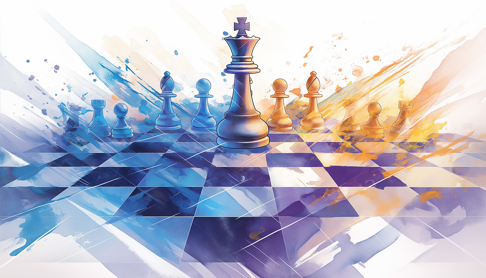
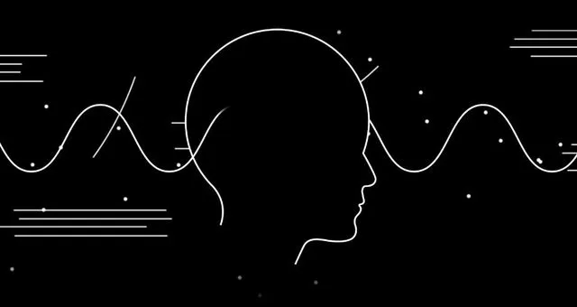

1. Qui suis-je ?
Je m'appelle Ugo Angles-Desrumaux, j'ai 18 ans et je vis à Lyon. On dit souvent de moi que je suis patient et impassible, et je pense que c’est vrai. J’aime prendre le temps d’observer et de comprendre avant d’agir. Une fois que je commence un projet, je m’y mets à fond, même si, je l’avoue, j’ai parfois la flemme de me lancer au début.
2. Mon parcours et ma famille
Actuellement, je suis étudiant à Guadia. Côté famille, mes parents sont séparés, mais ça ne m’a pas empêché de construire une bonne relation avec eux. J’ai aussi une petite sœur à qui je tiens beaucoup, même si je n’en parle pas forcément tout le temps.
3. Mes passions et centres d’intérêt
Je suis passionné par le sport, les échecs et tout ce qui touche au monde du cyber. Ce sont des activités qui me permettent de rester concentré et d’exercer mon esprit stratégique, ce que j’adore. En groupe, je suis plutôt du genre observateur. J’aime analyser ce qui se passe et réfléchir avant de m’impliquer.
4. Mes valeurs et ma vision de la vie
Pour moi, la liberté est une valeur essentielle. Je suis non-croyant, et j’aime garder mon esprit ouvert, guidé par mes propres choix et réflexions.
5. En résumé : ma personnalité
Voilà qui je suis : quelqu’un de posé et réfléchi, mais déterminé une fois que je décide de m’investir. Je prends mon temps, mais je vais toujours au bout de ce qui compte vraiment pour moi.
